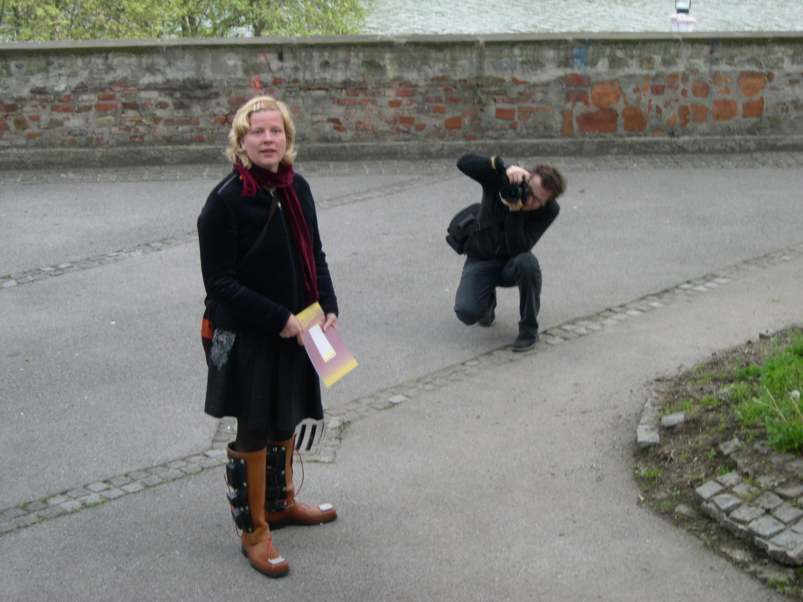
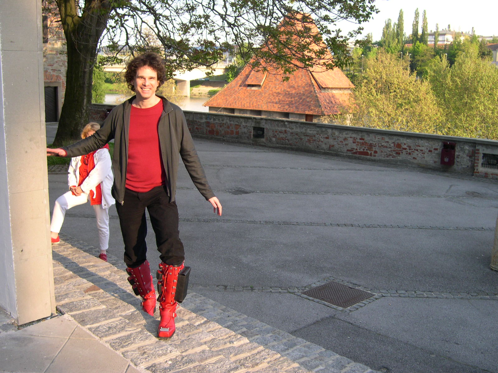

SEVEN MILE BOOTS . SIEBEN MEILEN STIEFEL . SEITSEMÄN MAILIN SAAPPAAT
"Seven mile boots, the magical footwear known from folk tales, enables its owner to travel seven miles with one step. With little effort one can cross the countries, to be present wherever it seems suitable and to become a cosmopolitan flaneur with the world as the street."

The project SEVEN MILE BOOTS is a pair of interactive shoes with audio. One can wear the boots, walk around as a flaneur simultaneousy in the physical world and in the literal world of the internet. By walking in the physical world one may suddenly encounter a group of people chatting in real time in the virtual world. The chats are heard as a spoken text coming from the boots. Wherever you are with the boots, the physical and the virtual worlds will merge together.

A project by Laura Beloff, Erich Berger and Martin Pichlmair (2003-2004)